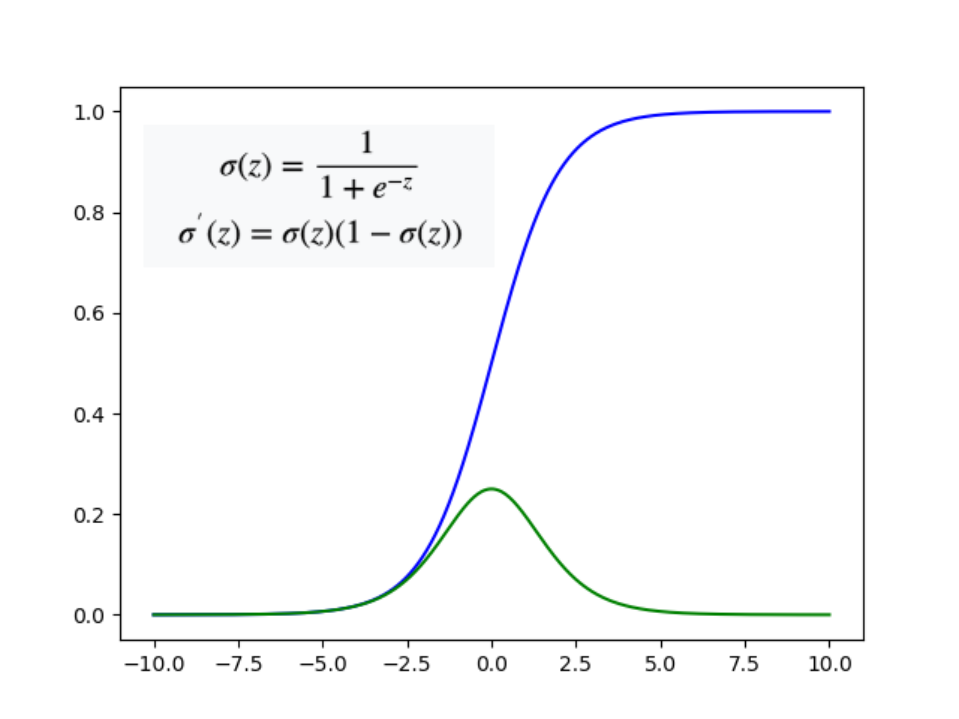
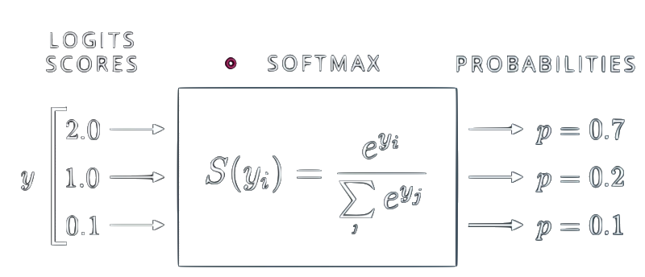
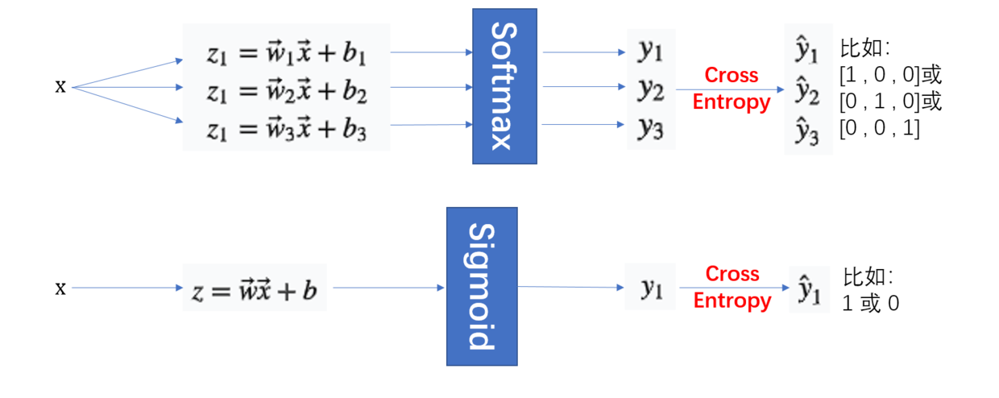

Logistic Regression
对数几率回归/逻辑回归/逻辑斯蒂回归/最大熵模型也即Logistic Regression是深度学习的基础，算法的重要性不言而喻。Logistic Regression虽然叫“Rgression”，但其实与之前介绍的SVM分类（svc）方法一样，同属分类算法。本篇博文对该算法的介绍流程基本参考了李宏毅老师的机器学习课程，文章后半部分主要以问答的形式给出了关于逻辑斯蒂回归的部分理解。
基础知识回顾
$ $
Bernoulli distribution
伯努利分布/两点分布/0-1分布是一个非常简单的概率模型，事件只有两种，常见于二分类问题，其概率密度函数（PDF）如下：
sigmoid 函数及其导函数
Sigmoid 函数意思就是S型函数，因为长相就是S形的，公式如图左上角所示，下图蓝色表示sigmoid函数，绿色表示其导函数。sigmiod在学习机器学习和深度学习时会时常遇到。

softmax函数
softmax可以将一组数字转换成一组概率，并且突出较大数值的优势（使其在概率上有很大的值），如下图所示：

公式推导
概率模型
对于二分类问题，假设现在有一笔training data（下表中表示数据属于Class 1，表示数据属于Class 2）：
| 数据 | …… | ||||
|---|---|---|---|---|---|
| 类别 | …… |
现已知一个新数据，我们可以构造一个概率密度函数（PDF）来表示属于的概率：
这里引入的参数和sigmoid函数并不是凭空捏造出来的，实际上，是可以根据生成模型推导出这个公式的，这部分的内容可以参考这里。
如此一来，假设“属于”这件事情和“属于”这件事情是相互独立的，那么就可以得出，training data中的所有事件全部发生的概率为：
- 对于二分类问题，由于属于，所以也即；
- 实际数据往往是离散的，这里使用概率密度函数（PDF）也许不准确。
最大似然估计（Maximum Likelihood）
为了让PDF可以表示真实数据的distribution，也即让最为准确，我们希望计算得到的尽可能大，当然，最大值就是1了。接下来目标便是找到一组使得：
为了方便（Mathmatic Convenient），将上式改写：
并且引入参数（也是关于x的一个两点分布）：
结合式(5)和式(6)，有：
代入式(5)，得
式(8)的右边便是两个二项分布的Cross Entropy，也就是logistic regression的loss function/object function接下来要做的便是对式(8)进行优化/求最小值。
交叉熵（Cross Entropy and KL-divergence)
熵：在信息论中（information theroy）离散概率分布函数的熵为
KL-divergence: 为了衡量两个离散分布函数的相似度，如果使用传统的二范数距离或者向量的夹角距离，显然不合适，这里定义
来衡量两个离散分布函数有多接近/相似，注意，当时，同分布。Cross Entropy:
所以对应到式(8)中，对于，有：
优化
有了多个Corss Entropy求和作为loss，接下来便是对目标函数/损失函数进行求解，求解目标是使该函数取最小值，这里可以使用Gradient Descent方法，牛顿迭代法或者其他启发式优化算法理论上也是可以的。
从二分类到多分类
上面的推导都是基于binary classification的，如果要进行multiple classification，就需要对上面的情况进行扩展了。这里先给出做法（how），关于sigmoid和softmax分析请继续往下看。
首先不再是只做一次“”变换了，而是做次，就是需要分类的类别数，目标的分布也不再是0-1这样，而是多维的0-1分布，比如：对于三分类问题，，则，而计算概率的函数也由sigmiod函数转变为softmax函数。

方法局限性（limitation）
逻辑回归的局限性在于，分类时分割线只是线性的（直线、平面或者超平面），所以对于非线性分类问题，需要另辟蹊径。
到这里，有些同学可能有疑问，明明使用了sigmoid或者softmax函数处理仿射变换结果，怎么会还是线性的？？？ 首先，判断一个函数/系统是不是线性的，可以从输入和输出入手来探究，如图一所示，样本如果增大，显然也会成比例增大，而Softmax和Sigmoid在这里的作用仅仅是将结果转换成0-1之间的数值（概率），所以它还是一个线性分类的场景。
非线性可分的解法
对于非线性分类问题，可以采用类似于SVM的kernel方法，先对样本做feature map，再进行分类，但是这个map需要依靠人类的智慧去找了，具体的例子可以查看李宏毅的机器学习课。
问答&理解
为什么使用Cross Entropy计算loss？
这里的机器学习，关键部分可以理解成学习样本数据的分布，由于本质上是使用最大似然方法，要求最终得到的概率密度函数（PDF）可以给出一个新的数据属于某一类的可能性。而对于两个分布的相似度衡量，Cross Entropy目前来看应该还是不二之选。
用Square Error作为Loss行不行？
可以，不过训练过程将极其痛苦，按照李宏毅老师课程中所述，使用传统的二范数距离来度量两个分布的相似度的损失函数将会非常平坦，使用梯度下降算法进行优化时，往往不太可能得出比较好的结果。而使用Cross Entropy所得到的损失函数则具有较大的梯度，搜索速度将会比使用Square Error要快很多。
为什么叫Regression？
对比Linear Regression方法的计算过程，发现Logistics Regression与其一模一样，包括模型参数的更新公式，形式上都是一样的，虽然Logistics Regression是用来所分类的，还是叫逻辑回归比较”亲切”。
和信息论（information theory）的关系？
以上的推导过程都是基于概率的方法，使用了最大似然估计，但是这也完全可以从Information Theory的角度推导出逻辑回归的损失函数，所以，信息论只是认识这个问题的另外一个角度。
和Generation Model/生成模型的关系
逻辑回归是一个判别模型（Discrimination Model），我觉得和生成模型比，它是一个不好进行数学解释的模型。实际上，从生成模型到判别模型，参数被抽样化了，底层所依赖的数学理论也同样被抽象化了，一旦模型复杂了，判别模型就基本解释不了了。
一般来说，生成模型会对现有数据做一些假设并对样本数据内的信息进行抽象总结，从而给出模型对样本数据的新认识（样本数据里面没有的信息），而判别模型则一般仅会对样本数据之内的信息进行挖掘。所以，对于样本数足够多的时候，使用判别模型一般会由于使用生成模型。
sigmoid V.S. softmax
前面已经介绍过，从二分类到多分类，计算概率的函数就会从sigmoid转换为softmax，但实际上softmax就是sigmoid的“扩展板”。如果对于二分类问题也使用softmax函数，可以推导出概率模型和sigmoid给出的一模一样。
Logistic Regression V.S. Neural Network
到这里，其实已经很清楚了，DNN中的每一个神经元（Neural）就是一个sigmoid形式的逻辑回归，而对于softmax形式的逻辑回归，它其实就是一个没有hidden layer的NN，一层神经网络。
此外，之前讨论的非线性分类问题的解法，就是对原始样本数据先做特征映射，而NN算法在softmax之前都可以看成一个比较复杂的特征映射，并且这个映射的参数是自学习的。这样，也顺便解释了NN算法好于逻辑回归，并对非线性问题有很好的解决。
总结
- 介绍了逻辑回归算法的推导过程
- 说明了cross entropy的适用场景
- 对比了sigmoid和softmax函数
- 问答的形式给出了一些对逻辑回归算法的理解
Reference
原文作者: kiddie92
原文链接: https://kiddie92.github.io/2019/06/09/Logistic-Regression/
许可协议: 知识共享署名-非商业性使用4.0国际许可协议